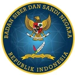
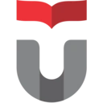
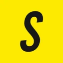

L2 · Career Archive
Journey
My employment, freelance work, education, research and awards, organized by year.
20262 entries
-
May 2026 to Oct 2026
Certification candidate
Microsoft and GitHub
I earned three Microsoft certifications in five months and am preparing for the GitHub agentic AI exam.
Milestone
-
Feb 2026 to Present
Technical Consultant, Software & AI
Metrodata (PT Mitra Integrasi Informatika)
I design and deliver Azure AI applications in the Microsoft AI practice for banking, automotive, mining and food manufacturing clients, alongside the practice's own products. I write the specs, direct AI coding agents and review their work before release.
Employment
-
20255 entries
-
Nov 2025 to Apr 2026
Backend Engineer (agency team)
Naremax
I developed backend modules for a digital products and training e-commerce platform with a 5+ person agency team, working in a TypeScript monorepo.
Freelance
-
Nov 2025 to Feb 2026
Lead Backend Engineer (freelance)
TEMMPAT
I led the v2 backend refactor for a premium event ticket marketplace, separating auction and resale workflows into a modular engine.
Freelance
-
Jun 2025 to Nov 2025
Software Engineer (contract)
370 Agency
I delivered projects across the full development lifecycle for agency clients using Next.js, Prisma, Express and PostgreSQL.
Employment
-
Jun 2025 to Aug 2025
Full Stack Engineer (freelance)
DariOrdal
I built ticketing for limited-quota premium events, with transactional booking to prevent overselling, payment webhooks, ticket tiers and QR e-tickets.
Freelance
-
May 2025 to Jun 2025
Sole developer
Side project
I built my first portfolio site with Astro on Cloudflare Pages, including anime-inspired theme palettes and a visitor counter.
Milestone
-
20243 entries
-
Nov 2024 to Dec 2024
Full-stack developer
Side project (group)
I worked on a Streamlit app for S&P 500 portfolio allocation, using SLSQP with sector and diversification constraints.
Milestone
-
Jun 2024 to Dec 2025
Software Engineer
Jenius (SMBC Indonesia)
I built backend services and React dashboards for insurance and priority-customer products at a digital bank. The dashboards reduced manual reporting work by about 90%.
Employment
-
Mar 2024 to Dec 2025
Full-stack developer
Side project
I built a Next.js crypto portfolio tracker using live market data. The site is still online.
Milestone
-
20234 entries
-
Sep 2023 to Dec 2023
Backend Engineer (freelance, remote)
Jublia (Singapore)
I developed search, matchmaking and feedback analytics services for a Singapore event-tech company.
Freelance
-
May 2023 to Jul 2023
Backend Engineer (part-time)

BSSNI automated vulnerability scanning for Indonesia's national cyber agency, building a backend for scanner orchestration, asset ownership, scheduled scans and audit logs.
Freelance
-
Mar 2023 to Jun 2024
Full Stack Developer
Jatis (PT Informasi Teknologi Indonesia)
I developed multi-tenant SaaS products for legal, asset and task management at a messaging and AI solutions company.
Employment
-
Feb 2023
BSc graduate

Telkom UniversityI graduated in Computer Science (Informatics) with a GPA of 3.88 / 4.00.
Education
-
20225 entries
-
Aug 2022 to Nov 2022
Competitor
Various organizers
My final competition season brought two 2nd-place finishes and a national finalist spot as I moved into full-time engineering.
Awards
-
Jul 2022 to Feb 2023
Software Engineer (contract)
Bandung Techno Park
I designed PostgreSQL databases and built Laravel and Express microservices, single sign-on, front pages and core backend features.
Employment
-
Apr 2022 to Jan 2023
Sole author
Telkom University (BSc thesis)
For my BSc thesis, I built a Django dashboard that collects university-related posts, predicts sentiment with a fine-tuned IndoBERT model and tracks trends over time.
Milestone
-
Feb 2022 to Feb 2023
Backend Engineer
MNC Group (Mister Aladin)
I developed the backend for a travel booking platform in my first full-time role, while still at university.
Employment
-
Jan 2022 to Jan 2023
Lecturer assistant, hackathon judge and program trainee
Telkom University and Telkom Indonesia
While completing my final year and working full-time, I taught AI, judged a hackathon and attended a structured backend engineering program.
Milestone
-
20218 entries
-
Sep 2021 to Feb 2022
IT Developer Intern
Kalbe Farma
I developed the backend for an electronic medical records system, from ERD and MySQL design to a Laravel microservice with documented REST APIs, deployment and maintenance.
Employment
-
Aug 2021
Author
Independent research
I studied COVID-19 case and vaccination trends toward herd immunity in Indonesia, using N-BEATS to forecast daily figures.
Milestone
-
Aug 2021 to Oct 2021
Data scientist and paper co-author
Independent research
I analysed sentiment by aspect in app-store reviews of four Indonesian e-wallets using CNN and LSTM. This was our selection-phase entry in the data competition my team later won.
Milestone
-
Jul 2021 to Sep 2021
Backend and AI Engineer Intern
Techbros (Germany, remote)
I built FastAPI services for a people-detection system, integrated TensorFlow and PyTorch models, wrote unit tests and deployed with Docker, alongside a demo web app.
Employment
-
Apr 2021 to Jun 2021
Backend Engineer Intern
DigiTiket
I worked as a backend engineering intern at an online ticketing company in Semarang.
Employment
-
Feb 2021 to Dec 2021
Learner
HackerRank, Kominfo x IBM, IARC x APTIKOM
I earned three certificates through self-study in problem solving, machine learning and data science.
Milestone
-
Jan 2021 to Oct 2021
Competitor
Various organizers
I earned four 1st places in one year, in business pitching, a security CTF and two data competitions.
Awards
-
Jan 2021 to Dec 2021
Club lead and practicum assistant
Telkom University
In my third year, I continued leading the programming club, completed my Go practicum assistant role and published data tools.
Milestone
-
20203 entries
-
Dec 2020
Author
Independent research
I used Naive Bayes to analyse public sentiment toward Indonesia's COVID-19 vaccination policy in my first NLP project.
Milestone
-
Feb 2020 to Dec 2020
Competitor
Various organizers
I recorded seven competition results in 2020: four placings, including a 1st place, finalist spots at Win Your Future and Codig 3.0 UX Design, and a Top 100 at Innovillage.
Awards
-
Jan 2020 to Dec 2020
Club lead, volunteer and practicum assistant
Telkom University
In my second year, I helped lead the programming club, attended a backend bootcamp, volunteered at a startup and began teaching as a practicum assistant.
Milestone
-
20195 entries
-
Sep 2019 to Dec 2022
Backend Engineer (part-time)

ShumiI built storefront and admin APIs for an anime figure store, covering pre-orders, ready stock, vouchers, partial payments and payment and shipping integrations.
Freelance
-
Aug 2019 to Feb 2023
BSc Computer Science (Informatics)
Telkom University
I focused my Computer Science studies on NLP through sentiment research, data competitions and a thesis using IndoBERT.
Education
-
May 2019 to Dec 2019
Bootcamp trainee and new student
DOT Academy and Telkom University
I completed a full-stack bootcamp, began studying at Telkom University and took on my first long-term freelance project.
Milestone
-
Jan 2019 to Nov 2019
Competitor
Various organizers
I earned five 2nd-place finishes in IT, web development, UI/UX and idea competitions, including Sigma Idea Competition at Telkom University.
Awards
-
Jul 2016 to May 2019
Vocational student, Software Engineering
SMK Telkom Malang
I studied software engineering at a vocational school in Malang, opened my GitHub account in 2016 and gained my first experience through training, an internship and competitions.
Milestone
-
Workshop annex
Side projects and public repositories.
2026
JagaRupa
I built JagaRupa to turn small sellers' real product photos into campaign images consistent with their brand. The agentic workflow uses a brief, an art director, a brand guardian critique loop and a copywriter, with chec…


2026
CalorIQ
CalorIQ estimates nutrition from meal logs submitted as text or photos, including Indonesian food. It uses a vision model, with daily to monthly summaries, per-user rate limits and a clearly labelled fallback.…


2026
DevLens
DevLens is my self-hosted dashboard for AI coding sessions, covering repositories, tools, costs and insights. An AI agent implemented it in one day; I directed the product and reviewed the work.…
2026
AI Jury Council
I use this multi-agent jury to challenge my product ideas. Ten AI juror roles, a devil's advocate and a meta-judge work through eight rounds with blind-review rules, fresh research and peer challenges.…
2026
Certification practice tools
I built exam simulators and focused practice packs for my Microsoft and GitHub exam preparation. The GH-600 trainer has 80 original scenario questions with explanations; the AI-103 simulator includes a timer and domain b…
Public repositories
- Python_Kampus-Merdeka-Reports-CrawlerCollects and generates Kampus Merdeka internship and independent study reports.★ 21 · Jupyter Notebook
- Naive-Bayes_Sentiment-Analysis-of-Government-COVID-19-Vaccination-PolicyUses Naive Bayes to analyse Indonesian public sentiment toward the COVID-19 vaccination policy.★ 19 · Jupyter Notebook
- IndoBERT-IndoBERTweet_Final-IFest-2021_Analisis-Sentimen-Kebijakan-PPKM-PemerintahMy team's first-place IFEST 2021 final entry: sentiment analysis of Indonesia's PPKM policy using IndoBERT and IndoBERTweet.★ 18 · Jupyter Notebook
- CNN-LSTM_Aspect-Based-Sentiment-Analysis-For-Indonesia-Digital-WalletClassifies sentiment by aspect and topic in Indonesian e-wallet reviews using CNN and LSTM.★ 14 · Jupyter Notebook
- Indobert_University-Feedback-Sentiment-Analysis_ModelDocuments fine-tuning of the university sentiment IndoBERT model published on Hugging Face.★ 14 · Jupyter Notebook
- Writeup-Foresty-CTF-Competition-2021Technical write-up from the first-place finish at Foresty CTF 2021.★ 8 · Markdown